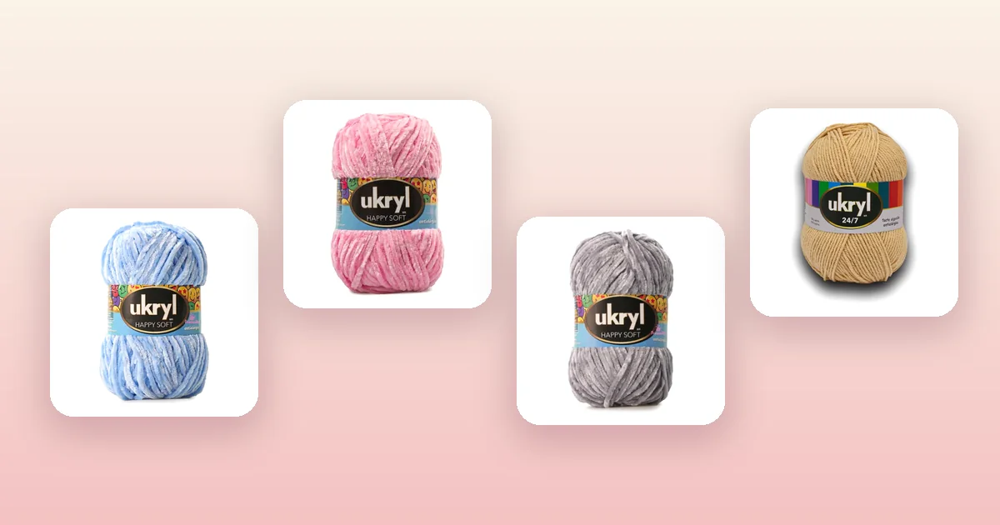

Proyectos de crochet
Cómo tejer una manta a crochet paso a paso
La manta es uno de los proyectos más satisfactorios del crochet: toma tiempo, pero el resultado es algo que se usa todos los días y que puede durar años. En esta guía aprendes a tejer una manta con punto alto, hilera por hilera, empezando por cómo calcular el ancho con una muestra, con consejos para que quede pareja y variaciones para hacerla a rayas o con granny squares.

Materiales para tejer tu manta
Esta manta se teje en hileras de punto alto, el mismo punto que usamos en la guía para tejer una bufanda a crochet, pero a una escala mucho mayor. Necesitas:
- Lana chenille Ukryl Happy Soft: entre 8 y 12 ovillos para una manta de bebé (aproximadamente 80 × 100 cm) o entre 16 y 24 para una de adulto (aproximadamente 130 × 170 cm). La chenille da volumen y suavidad con puntos simples: revisa los colores en lana chenille Ukryl Happy Soft, por ejemplo Lana Chenille Celeste Ukryl, Lana Chenille Rosado Ukryl o Lana Chenille Gris Ukryl.
- Alternativa en lana Ukryl 24/7: si prefieres una manta más liviana y con más caída, usa lana Ukryl 24/7 en vez de chenille; necesitarás un número similar de ovillos.
- Un ganchillo del tamaño adecuado para el hilo que elijas. Con chenille conviene uno más grande (6 a 8 mm) para que el tejido quede suelto y esponjoso.
- Tijeras y aguja lanera.
Cómo calcular las cadenetas iniciales
A diferencia de la bufanda, donde 26 cadenetas dan un ancho fijo y cómodo, en la manta necesitas calcular el ancho tú misma. Aquí va el método:
- Teje una muestra: haz una cadeneta de 20 puntos y teje unas 5 hileras de punto alto con tu ganchillo.
- Mide el ancho de la muestra en centímetros.
- Calcula: si tus 20 puntos miden, por ejemplo, 18 cm, y quieres una manta de 80 cm de ancho, haces 80 ÷ 18 × 20 ≈ 89 puntos. Redondea y suma 2 cadenetas extra para la hilera 1.
Este paso es importante porque la lana chenille rinde muy distinto a la lana 24/7: sin la muestra, el ancho final puede quedar lejos de lo que esperabas.
Patrón paso a paso
El patrón es el mismo de la bufanda (hileras de punto alto, ida y vuelta), pero con muchas más cadenetas y muchas más hileras. Lo que cambia es la escala, no la técnica.
| Paso | Qué hacer |
|---|---|
| Base | Teje una cadeneta del número de puntos que calculaste con la muestra, más 2. |
| Hilera 1 | 1 punto alto en la 4ª cadeneta desde el ganchillo (las 3 primeras cuentan como punto alto). 1 punto alto en cada cadeneta restante. Voltea. |
| Hilera 2 en adelante | 3 cadenetas de vuelta (cuentan como el primer punto alto), voltea, 1 punto alto en cada punto hasta el final. |
| Repetir | Repite hasta lograr el largo que quieras (80 a 100 cm para bebé, 150 a 170 cm para adulto). |
| Cierre | Corta el hilo dejando una cola de 20 cm, ciérralo y esconde todas las hebras con la aguja lanera. |
Un detalle importante: contar los puntos
En una manta de 80 o 90 puntos de ancho, perder o ganar un punto de vez en cuando es muy fácil y se nota rápido porque los bordes se ponen desiguales. Cuenta tus puntos cada 3 o 4 hileras: si el número no coincide, deshaz hasta encontrar el error. Es mucho mejor corregir ahora que cuando ya llevas 50 hileras.
Borde de terminación (opcional)
Cuando la manta mida el largo que quieres, puedes tejer un borde parejo alrededor de todo el perímetro para darle un acabado prolijo:
- Sin cortar el hilo, teje puntos bajos a lo largo de todo el borde corto de la manta.
- En cada esquina, teje 3 puntos bajos en el mismo punto para que gire sin fruncirse.
- Sigue por el borde largo, luego el otro borde corto y el último borde largo, cerrando con un punto raso donde empezaste.
- Si quieres un borde más ancho, repite la vuelta de puntos bajos una o dos veces más.
Consejos para que tu manta quede pareja
- Haz la muestra antes de empezar. Con chenille el resultado es muy distinto al de un hilo liso: la muestra te ahorra sorpresas.
- Usa un ganchillo un poco más grande de lo habitual si quieres que la manta quede suelta y esponjosa, sobre todo con chenille.
- Cuenta los puntos cada pocas hileras. En una manta de muchos puntos es muy fácil perderse.
- Compra todo el hilo de una vez. Los ovillos de un mismo color pueden variar levemente de tono entre lotes.
- Cuida el lavado. Cuando termines tu manta, revisa nuestra guía de cómo lavar y cuidar la lana para que te dure mucho tiempo.
Variaciones para seguir practicando
- Manta a rayas: cambia de color cada 4 u 8 hileras, alternando colores de lana chenille o lana Ukryl 24/7.
- Manta de granny squares: en vez de hileras, teje cuadrados individuales y únelos. Revisa nuestra guía del granny square para aprender el patrón.
- Manta de bebé en algodón: para una manta liviana y lavable, usa hilo de algodón en vez de lana.
- A juego con un gorro: teje un gorro a crochet del mismo color para un regalo completo.